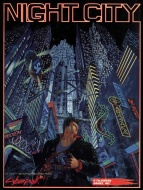

|  | Technical data |
| Supplement for the role-playing game Cyberpunk 2020, published by R. Talsorian Games (1991) | |
| Theme | Description of Night City and details on the society and urban environment in 2020 |
| Background quality | 4 / 5 |
| Scenario quality | - |
| Rules quality | 3 / 5 |
| Artworks quality | 3 / 5 |
| Writing quality | 3 / 5 |
This supplement breathes life into Cyberpunk's main playground : Night City. Night City is an imaginary city built at the turn of the millennium by a tycoon who gave it his name and located south of the present-day San Francisco Bay Area. Although the presentation is a bit of a jumble of information on social categories, gangs, media and California in general, NC's neighborhood-by-block description is relatively thorough and the presence of mini-inspirations allows an uninspired GM to tell a few anecdotes and create improvised situations at will. This supplement is essential for a GM who has not decided to play in a specific location. The layout is clear, despite a redundant flaw in role-playing supplements : a very beautiful cover and more than mediocre interior illustrations. As for the content, it doesn't completely get rid of the caricatured and simplistic aspect of CP2020's background, but it nevertheless makes it richer.
{kind=link}